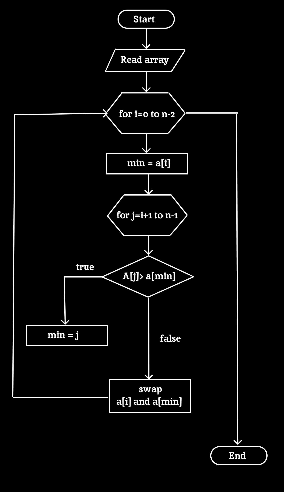

Selection Sort Selection sort is a simple and efficient sorting algorithm that works by repeatedly selecting the smallest (or largest) element from the unsorted portion of the list and moving it to the sorted portion of the list.
The algorithm repeatedly selects the smallest (or largest) element from the unsorted portion of the list and swaps it with the first element of the unsorted part. This process is repeated for the remaining unsorted portion until the entire list is sorted.
The average and worst-case complexity of selection sort is O(n2), where n is the number of items. Due to this, it is not suitable for large data sets.
HOW IT WORKS ?
Initialization:
The entire array is considered unsorted initially.
Find The Minimum:
The algorithm starts by searching for the smallest (or largest, depending on the sort order) element in the unsorted part of the array.
Swap:
Once the minimum element is found, it is swapped with the first element of the unsorted part of the array.
This element is now in its correct position, so the sorted part of the array grows by one element.
Repeat:
Repeat the process for the rest of the array, moving the boundary between the sorted and unsorted parts one element to the right each time, until the entire array is sorted.
Advantages
Simplicity
The algorithm is easy to understand and implement, making it a good choice for teaching the basics of sorting algorithms.
In-Place Sorting
It only requires a constant amount of additional memory (O(1)), as it sorts the array in place without needing extra storage space.
No Extra Space Required
Since it operates directly on the input array, no additional memory allocation is necessary beyond the array itself.
Works Well with Small Datasets:
For small datasets, the simplicity and minimal overhead can make it a practical choice.
Stability in Worst-Case Time Complexity
The worst-case time complexity is O(n ^2), and this doesn't change depending on the input data, giving predictable performance.
Disadvantages
Inefficiency with Large Datasets:
With a time complexity of O(n 2), Selection Sort becomes impractical for large datasets, as it performs poorly compared to more advanced algorithms like Quick Sort or Merge Sort.
Not Stable
Selection Sort is not a stable sort, meaning that it may change the relative order of equal elements during sorting.
High Number of Comparisons:
Even in the best case, Selection Sort performs a large number of comparisons, making it inefficient for nearly sorted arrays.
Slow Compared to Other Algorithms:
Other algorithms like Quick Sort or Merge Sort, which have average-case time complexities of O(nlogn), are significantly faster for most datasets
Fixed Performance Regardless of Input:
Unlike algorithms that adapt to already-sorted or partially-sorted input (e.g., Insertion Sort), Selection Sort always performs the same number of comparisons, regardless of the initial order of the data.
Applications
Small Datasets
For sorting small datasets where the overhead of more complex algorithms isn't justified, Selection Sort's simplicity and minimal memory usage make it a reasonable choice.
Embedded Systems
In systems with limited memory (e.g., embedded systems), where minimizing memory usage is critical, Selection Sort's in-place sorting can be advantageou.
Easy-to-Understand Sorting for Teaching:
In educational environments, Selection Sort is often used to teach sorting concepts due to its straightforward nature.
It helps beginners understand how sorting works without the complexity of more advanced algorithms.
Sorting When Memory is a Constraint
In scenarios where available memory is very limited, such as certain real-time systems or low-end hardware, the constant space requirement of Selection Sort makes it a viable option.
Sorting a Few Elements:
When you need to sort just a small number of elements, for example, sorting the top few minimum or maximum values in an array, Selection Sort can be a simple and effective method.
Dataset with High Swapping Costs:
If the cost of swapping elements is significantly higher than comparing them (e.g., in distributed systems where data resides on different nodes), Selection Sort's approach of minimizing swaps by only swapping once per iteration can be beneficial.
Pseudocode
SELECTIONSORT(array, n):
for i from 0 to n-1:
minIndex = i
for j from i+1 to n-1:
if array[j] < array[minIndex]:
minIndex = j
swap(array[i], array[minIndex])
Explanation
Function Definition:
selectionSort(array, n):
Defines the function selectionSort that takes an array and its size n as parameters.
Outer Loop: for i from 0 to n-1: Iterates over each element of the array, treating the range from the beginning of the array up to the second-to-last element. Here, i represents the current position in the array where the smallest unsorted element will be placed.
Initialization: minIndex = i: Initializes minIndex to the current index i. This variable keeps track of the index of the smallest element found in the unsorted part of the array.
.
Inner loop : for j from i+1 to n-1: Starts a nested loop from the position right after i to the end of the array. The purpose is to find the smallest element in the unsorted part of the array.
Find Minimum: if array[j] < array[minIndex]: Compares the current element array[j] with the element at minIndex. If array[j] is smaller, it updates minIndex to j. This ensures that minIndex always points to the smallest element in the unsorted portion of the array.
Swap:swap(array[i], array[minIndex]): After the inner loop completes, the smallest element found is swapped with the element at the current position i. This places the smallest element in its correct position in the sorted portion of the array.
Flowchart

Example
Let's say we have an array of integers:
array = [64,25,12,22]
Initialize the element:[64,25,12,22]
Selection Sort Steps:
Iteration 1:
Find Minimum from Index 0 to 3:
Compare 64 with 25. Minimum is 25.
Compare 25 with 12. Minimum is 12.
Compare 12 with 22. Minimum is 12.
Swap: Swap 64 (at index 0) with 12 (at index 2).
Array after swap:
12,25,64,22
Iteration 2:
Find Minimum from Index 1 to 3:
Compare 25 with 64. Minimum is 25.
Compare 25 with 22. Minimum is 22.
Swap: Swap 25 (at index 1) with 22 (at index 3).
Array after swap: 12,22,64,25
Iteration 3:
Find Minimum from Index 2 to 3:
Compare 64 with 25. Minimum is 25.
Swap: Swap 64 (at index 2) with 25 (at index 3).
Array after swap:
12,22,25,64
Iteration 4:
Find Minimum from Index 3 to 3:
Only one element left (64), which is already in the correct position.
Final Sorted Array:
[12,22,25,64]
In each iteration, we find the smallest element in the remaining unsorted portion of the array and place it in the correct position by swapping.
After completing all iterations, the array is sorted.
Visualization
Selection sort
function selectionSort(array)
n=length(array)
for i from 1 to n - 1:
minIndex = i
for j = i+1 to n-1 do
if array[j] < array[minIndex] then
minIndex = j
if minIndex != i then
swap array[i] with array[minIndex]
Speed:
1x
2x
Complexity
Visualization Explanation
Time Complexity
Definition: Time complexity measures the amount of time an algorithm takes to complete as a function of the size of the input. For selection sort, the time complexity can be expressed in different scenarios:
Worst-Case Time Complexity:
O(n²), as it performs n(n-1)/2 comparisons in the worst case.
Best-Case Time Complexity:
O(n²), as it still needs to compare each element with every other element.
Average-Case Time Complexity:
O(n²), as it requires approximately n²/2 comparisons on average.
Space Complexity
Definition: Space complexity measures the amount of memory an algorithm uses relative to the size of the input. For selection sort, the space complexity is straightforward:
Scenario: Selection Sort sorts an array by finding the minimum element from the unsorted portion and swapping it with the first unsorted element, using only a few extra variables like loop counters, an index variable, and a temporary variable.
Analysis:he memory used is constant, as it does not depend on the input size, and no additional arrays or significant memory allocation are required.